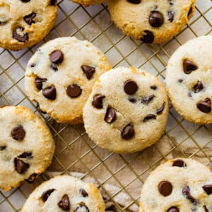

Cottage Cheese Cookies

Cottage cheese cookies so good that your friends will want the recipe!
These cottage cheese cookies are high protein, chewy, soft, and have minimal ingredients. They are also low in sugar, with 8 grams of protein per cookie.
Ingredients
- 1 cup 4% milkfat cottage cheese
- 1/4 cup pure maple syrup
- 1 teaspoon vanilla extract
- 1 cup almond flour
- 2 tablespoons melted coconut oil
- 1/2 cup vanilla protein powder
- 1/2 cup chocolate chips, plus more for topping
Instructions
- Preheat oven to 350°F and line a baking sheet with parchment paper.
- In a blender, add the cottage cheese, maple syrup and vanilla. Blend on high until smooth.
- In a mixing bowl combine almond flour and protein powder. Add the coconut oil and cottage cheese mixture. Stir until combined.
- Fold in the chocolate chips.
- Scoop dough onto a prepared baking sheet using a medium cookie scoop and use your hands to flatten the cookies just a bit so they’re in a cookie shape. You can also roll the cookie dough into a ball and then use your hand to flatter for a more uniform shape. Add a couple more chocolate chips on top of each cookie.
- Bake for about 15-16 minutes or until the bottom of the cookies are golden brown. Let cool for a few minutes on the baking sheet then transfer to wire cooling racks to cool completely. Enjoy!